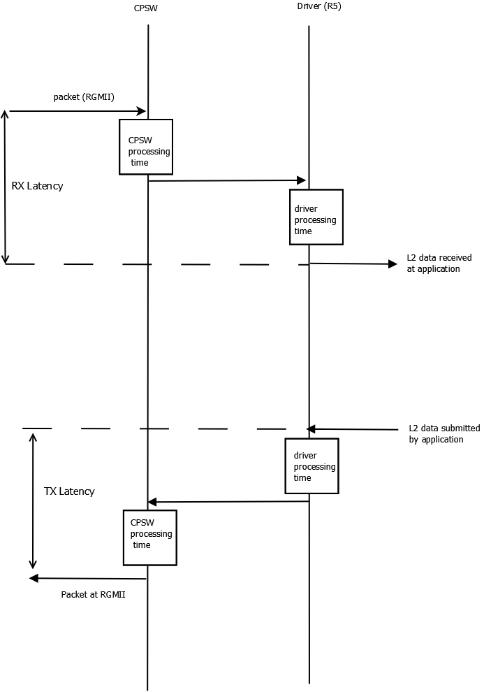
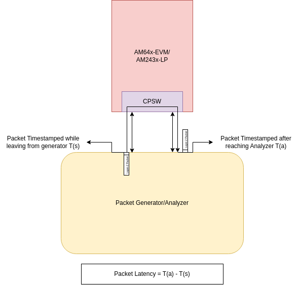

|
AM261x MCU+ SDK
26.01.00
|
|
|
AM261x MCU+ SDK
26.01.00
|
|
This section provides the performance numbers and memory footprint of Ethernet drivers using CPSW peripheral in MCU+ SDK
| SOC Details | Values |
|---|---|
| Core | R5F |
| Core Operating Speed | 400 MHz |
| Memory Type | MSRAM |
| Cache status | Enabled |
The table below capture:
.map file for a fully linked application image - which reflects actual library content used by application/usecase. Enabling LTO would shrink the code/.text figures in the Example Sizes table further by removing unused/inlined functions across translation units at link time.Each row is a complete, linked application image, so unused library code has already been stripped by the compiler
.text, i.e. actual code retained in this image (a subset of the library's full .text from the table above, since the linker drops unreferenced functions)..rodata), e.g. string literals and const tables..data + .bss combined for that library's contribution to this image.--- cell in the row, i.e. the whole image's static footprint attributable to these libraries (excludes application code/OS/driver layers not listed here).| Use Case | enet-cpsw | lwip (freertos) | tsn (freertos) | FreeRTOS and other libraries | Packet Buffers | Total (KB) | ||||||||||
|---|---|---|---|---|---|---|---|---|---|---|---|---|---|---|---|---|
| code | ro_data | rw_data | code | ro_data | rw_data | code | ro_data | rw_data | code | ro_data | rw_data | code | ro_data | rw_data | ||
| Basic Layer2 TX/RX | 67.65 | 16.78 | 4.91 | — | — | — | — | — | — | 40.16 | 6.85 | 9.61 | — | — | 11.8 | 157.76 |
| LwIP - TCP Server | 66.39 | 15.21 | 5.17 | 56.55 | 17.56 | 55.16 | — | — | — | 39.3 | 6.82 | 9.6 | — | — | 14.21 | 285.97 |
| LwIP - UDP/IGMP Multicast | 66.60 | 15.31 | 5.17 | 60.60 | 18.18 | 55.16 | — | — | — | 45.1 | 7.21 | 10.03 | — | — | 15.3 | 298.66 |
| Basic TSN (talker/listener) | 80.51 | 16.08 | 4.91 | — | — | — | 158.34 | 39.33 | 154.25 | 47.3 | 5.83 | 7.9 | — | — | 12 | 526.45 |
Analysis: Adding lwip to a bare Layer2 example costs roughly +155 to +160 KB. The Gptp use case is the largest at ~526 KB total.

| Configuration | Value |
|---|---|
| Processing Core | Main R5F0 Core 0 |
| Core Frequency | 400 MHz |
| Ethernet Interface Type | RGMII at 1 Gbps |
| Packet buffer memory | MSRAM (un-cached) |
| Scatter-gather TX | Yes |
| Scatter-gather RX | Yes |
| CPDMA interrupt pacing | Yes |
| RTOS | FreeRTOS |
| RTOS application | Modified Enet CPSW Loopback Example example |
| Host PC tool version | nload |
| Rx packet length | 200 B |
| Tx packet length | 200 B |
RX/TX Latency here is one-way, wire-to-application (or application-to-wire) latency, split into where it's spent: CPU<->CPSW is time inside the SoC (CPSW switch + CPDMA + interrupt/ISR handling up to/from the application buffer), and PHY is the fixed latency contributed by the DP83869HM PHY itself (from its datasheet, not measured on this setup). Total Latency is the sum of Phy delay and time taken by packet to/from CPU DMA Trigger to Mac.
| Parameter | CPU<->CPSW Latency Value (ns) | PHY (DP83869HM)Latency (from datasheet) in ns | Total Latency (ns) |
| RX Latency | 4756 | 193 | 4949 |
| TX Latency | 13225 | 384 | 13609 |
| Configuration | Value |
|---|---|
| EVM Type | AM261x-SOM |
| CPSW CPPI Frequency | 320 MHz |
| Ethernet Interface Type | RGMII |
| PHY model number | DP83869 |
| Ethernet Cable Spec | CAT-6 |
| Sample size | 10 Million Packets |
| RTOS application | Modified Enet Layer 2 CPSW SWITCH Example example |

| Datagram Length | Latency @ 1Gbps link (in us) | Latency @ 100Mbps link (in us) | Latency @ 10Mbps link (in us) | |||
| Without Cut-Through | With Cut-Through | Without Cut-Through | With Cut-Through | Without Cut-Through | With Cut-Through | |
| 64 Bytes | 1.8 | 1.7 | 7.9 | 7.8 | 73.4 | 71.9 |
| 256 Bytes | 3.1 | 2.0 | 23.0 | 13.8 | 227.3 | 135.6 |
| 512 Bytes | 5.2 | 2.0 | 43.5 | 13.8 | 432.0 | 135.6 |
| 1518 Bytes | 13.2 | 2.0 | 124.0 | 13.8 | 1237.0 | 135.6 |
This table measures how quickly and how precisely a slave synchronizes to a gPTP grandmaster over a single hop - see the TSN demo's daisy-chain KPI data (Enet CPSW TSN Integrated Demo - Talker) for multi-hop accuracy under load.
| gPTP Parameter | Value | Notes |
|---|---|---|
| Initial time to sync | ~500 ms | Measured from link up with Quick sync enabled. |
| Sync accuracy | < 100 ns | Tested with Intel I210, I229, and I350 NICs and TI EVM-to-EVM setups. |
| Configuration | Value |
|---|---|
| Processing Core | Main R5F0 Core 0 |
| Core Frequency | 400 MHz |
| Ethernet Interface Type | RGMII at 1 Gbps |
| Packet buffer memory | MSRAM (cached) |
| Hardware checksum offload | Enabled on Tx side Enabled on Rx Side |
| Scatter-gather TX | Yes |
| Scatter-gather RX | Yes |
| CPDMA interrupt pacing | Yes |
| RTOS | FreeRTOS |
| RTOS application | Enet Lwip CPSW Example example |
| TCP/IP stack | LwIP version STABLE-2_2_1_RELEASE |
| Host PC tool version | iperf v2.0.10 |
| Number of Rx packet buffers | 32 |
| Number of Tx packet buffers | 16 |
Maximum sustained TCP throughput as measured by iperf, and the R5F CPU load required to sustain it. TCP RX/**TX** are single-direction tests; TCP Bidirectional runs both directions simultaneously, so its Bandwidth column reports the RX and TX rates achieved concurrently.
| Test | Bandwidth (Mbps) | CPU Load (%) |
| TCP RX | 195 | 98 |
| TCP TX | 158 | 100 |
| TCP Bidirectional | RX=73 TX=87 | 100 |
Analysis: Single-direction TCP TX (183 Mbps) outperforms RX (150 Mbps) since RX contains LwIP's receive-side buffer copy/ACK processing; both directions run near 100% CPU load.
Host PC commands:
iperf -c <evm_ip> -riperf -c <evm_ip> -dUnlike the TCP table above, the Bandwidth column in the UDP RX rows is the offered load requested on the host PC (via iperf's -b <bw>, see the commands below) - not necessarily what the EVM actually received. Each of the 3 UDP RX rows is one offered-load step (4/5/10 Mbps for 64B datagrams, scaling up for larger datagrams); Packet Loss (%) at that row shows how much of that offered load the EVM failed to receive. UDP RX (Max) and UDP TX (Max) are the highest offered load (RX) or transmit rate (TX) the EVM could sustain at that datagram size while keeping packet loss low.
| Test | Datagram Length = 64B | Datagram Length = 256B | Datagram Length = 512B | Datagram Length = 1470B | ||||||||
| Bandwidth (Mbps) | CPU Load (%) | Packet Loss (%) | Bandwidth (Mbps) | CPU Load (%) | Packet Loss (%) | Bandwidth (Mbps) | CPU Load (%) | Packet Loss (%) | Bandwidth (Mbps) | CPU Load (%) | Packet Loss (%) | |
| UDP RX | 4 | 52 | 0.0 | 5 | 18 | 0.0 | 25 | 45 | 0.0 | 50 | 32 | 0.0 |
| 5 | 63 | 4.0 | 15 | 51 | 0.0 | 50 | 79 | 5.0 | 60 | 38 | 0.0 | |
| 10 | 99 | 21 | 25 | 77 | 0.8 | 55 | 84 | 5.0 | 95 | 60 | 0.0 | |
| UDP RX (Max) | 4 | 52 | 0.0 | 30 | 88 | 4.1 | 40 | 71 | 0.9 | 111 | 97 | 0.5 |
| UDP TX (Max) | 15.2 | 100 | 0.0 | 60.7 | 100 | 0.0 | 121 | 100 | 0.0 | 349 | 100 | 0.0 |
Host PC commands:
iperf -c <evm_ip> -u -l64 -b <bw> -riperf -c <evm_ip> -u -l256 -b <bw> -riperf -c <evm_ip> -u -l512 -b <bw> -riperf -c <evm_ip> -u -b <bw> -rLwip Application size: 793KB
FLASH: 198KB
| Region | Memory |
| .text | 156KB |
| .rodata | 42KB |
OCRAM: 595KB
| Region | Memory |
| .bss | 471KB |
| .sysmem | 34KB |
| .data | 23KB |
| .stack | 8KB |
| misc | 59KB |
| Board POV | MSRAM - OOB | XIP : text and ro data in flash | Opti-flash: RL2 8KB | Opti-flash: RL2 16KB | Opti-flash: RL2 32KB | Opti-flash: RL2 64KB | Opti-flash: RL2 128KB |
| UDP Tx | 273Mbps at 100% CPU load | 145Mbps at 100% CPU load | 224Mbps at 100% CPU load | 252Mbps at 100% CPU load | 270Mbps at 100% CPU load | 273Mbps at 100% CPU load | 273Mbps at 100% CPU load |
| UDP Rx | 116Mbps ~1% pkt drop 86% CPU load | 45Mbps ~1% pkt drop 98% CPU load | 64Mbps ~1% pkt drop 99% CPU load | 92Mbps ~1% pkt drop 97% CPU load | 108Mbps ~1% pkt drop 89% CPU load | 110Mbps ~1% pkt drop 86% CPU load | 115Mbps ~1% pkt drop 89% CPU load |
 1.8.20
1.8.20